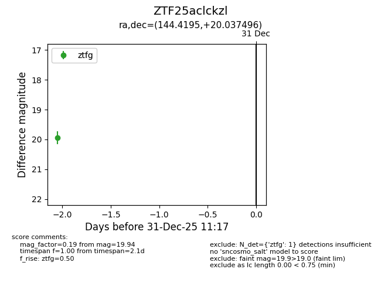
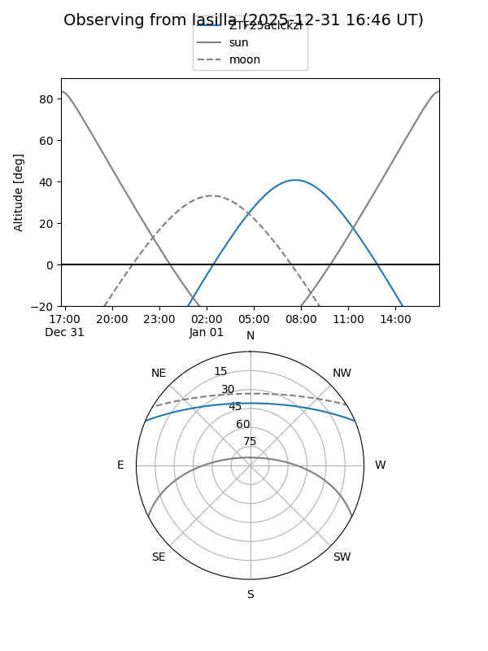
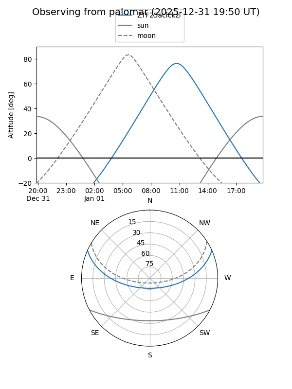

ZTF25aclckzl
Target ZTF25aclckzl at 2025-12-31 17:00
Aliases and brokers:
FINK:
Lasair:
ALeRCE:
alt names
ZTF25aclckzl (ztf,fink_ztf)
Coordinates:
equatorial (ra, dec) = 144.4195,+20.03750
equatorial (HMS+DMS) = 09:37:40.69,+20:02:14.98
galactic (l, b) = (211.2412,+45.30976)
Flags:
Photometry:
last ztfg=19.94
1 ztfg detections
Lightcurve

Visibility


Additional plots